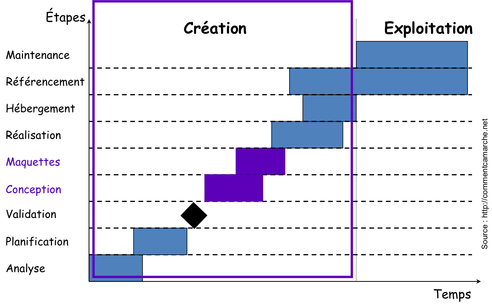
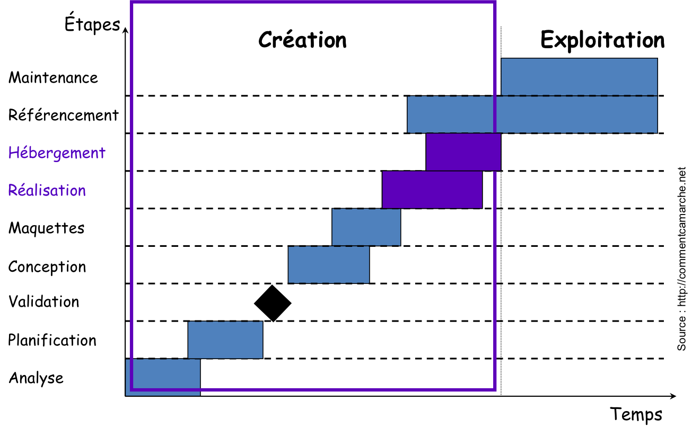

Création d'Applications sur Internet
Chapitre1: Internet et le Web
Fatemeh BORRAN
Sommaire
- Internet
- Connexion à Internet
- Services Internet
- Le Web
- Conception de pages Web
Qu'est-ce que c'est Internet?
Internet
- INTERconnected NETworks (en anglais)
- une interconnexion de réseaux
Internet est un réseau des réseaux.
Qu'est-ce que c'est un réseau? (1/2)
Un réseau d'ordinateurs est un ensemble d'ordinateurs connectés les uns aux autres par un moyen quelconque.
Qu'est-ce que c'est un réseau? (2/2)
On peut comparer un réseau d'ordinateurs à un réseau d'émetteurs de télévision ou de radio.
- les réseaux radio ou télévision diffusent la même musique, les mêmes informations, les mêmes feuilletons;
- une emission de télé passe par plusieurs intermediares (ou stations) pour arriver à une destination locale ou internationale. Les comminucations sont dans une direction.
- alors que dans un réseau informatique chaque machine conserve son individualité.
Les réseaux radio ou télé
La communication sur l'Internet
A la différence des réseaux de réémetteurs, les réseaux d’ordinateurs fonctionnent à l'alternat:
- quand la machine
Aenvoie un message à la machineB,Bpeut renvoyer une réponse àA. Bien sûr,Bpeut aussi s’adresser à la collectivité.
La communication sur Internet est en effet définie via plusieurs langages que nous appelons des protocoles (voir Chapitre2).
Un réseau hétérogène
- Rappel: l'Internet n'est pas vraiment un réseau, c'est un réseau de réseaux.
- Ces réseaux hétérogènes (de natures différentes) qui se sont développés aux quatre coins du globe vont
- des réseaux nationaux,
- à celui qu'un étudiant en informatique construit en reliant deux PCs,
- en passant par le réseau local de la HEIG-VD.
Le réseau Internet en image
Connexion à Internet
Pour vous connecter à Internet, il vous faut:
- une carte réseau sur votre ordinateur
- un modem pour se connecter à un réseau par l'intermédiaire des lignes qui ne sont pas prévues à cet effet à l'origine (téléphone, télévision)
- un abonnement auprès d'un fournisseur d’accès afin d’établir une liaison entre votre propre machine et l'Internet
- les logiciels nécessaires pour gérer les communications et exploiter votre connexion
La carte réseau
- La carte réseau est l'élément de l'ordinateur qui permet de se connecter à un réseau par des lignes spécialement prévues pour faire transiter des informations numériques.
- La fonction d'une carte réseau est de préparer, d'envoyer et de contrôler les informations sur le réseau.
Le Modem (1/3)
- Le Modem est le périphérique utilisé pour transférer des informations entre les ordinateurs via les lignes de communications (téléphoniques, de télévision).
Le Modem (2/3)
Les ordinateurs fonctionnent de façon digitale (ou numérique): ils utilisent le langage binaire (une série de 0 et de 1), mais les modems sont analogiques.
- Les signaux digitaux passent d'une valeur à une autre (1 ou 0).
- L'analogique par contre n'évolue pas par pas, il couvre toutes les valeurs de façon continue. Ainsi vous pouvez avoir les valeurs 0, 0.1, 0.2, 0.3, ..., 1.0 et toutes les valeurs intermédiaires.
- Le modem convertit en analogique l'information binaire provenant de l'ordinateur. Il envoie ensuite ce nouveau code dans la ligne téléphonique.
Le Modem (3/3)
Ainsi, le modem module les informations numériques en ondes analogiques; en sens inverse il retranscrit les données sous forme analogique en données numériques.
- C'est pourquoi modem est l'acronyme de MOdulateur/DEModulateur.
Le fournisseur d'accès Internet (1/2)
- Le fournisseur d'accès Internet (FAI) est aussi appelé provider, mot provenant de l'appellation anglaise ISP (Internet Service Provider)
- C'est un prestataire de service qui vous permet de vous connecter à Internet, contre le paiement d’un abonnement.
- Quelques fournisseurs d’accès en Suisse: Bluewin (Swisscom), Cablecom, Sunrise, VTX, etc.
Le fournisseur d'accès Internet (2/2)
- Le fournisseur d'accès Internet est un intermédiaire qui vous procure un accès à Internet par son biais.
- Votre connexion est donc une connexion par procuration car c'est votre fournisseur qui envoie toutes les requêtes que vous faites, et c'est lui qui reçoit les pages que vous demandez et qui vous les réexpédie.
Les logiciels
- Lorsque l'on a établi une connexion à Internet, on peut utiliser différents types de services au moyen de logiciels spécialisés.
- Quels services connaissez-vous?
- Quels logiciels permettent d’utiliser ces services?
Chat: Messagerie instantanée (1/2)
- Du verbe anglais to chat (bavarder)
- Toute application qui permet à différents Internautes de dialoguer en direct, dans un interface qui peut être un logiciel ou une page Web. Les messages s’affichent en temps réel et tous les utilisateurs peuvent y répondre.
- Exemples: MSN Messenger, IRC, ICQ (I seek you), Caramail, etc.
Chat: Messagerie instantanée (2/2)
Messagerie: courrier électronique (1/3)
- Permet d'envoyer des messages à un ou plusieurs destinataires sans que ceux-ci soit connecté à Internet au même moment.
- On peut attacher toutes sortes de fichiers au message (texte, images, vidéos, etc.), on les appelle des pièces jointes (attachments en anglais).
- Attention, plusieurs restrictions peuvent être imposées par les serveurs de messagerie (taille de la pièce jointe, type de fichier)
- Exemples: Outlook, Thunderbird, Hotmail, etc.
Messagerie: courrier électronique (2/3)
Messagerie: courrier électronique (3/3)
Autres services
- Newsgroups (groupes de discussion): permet d’envoyer des messages électroniques à tous les abonnés d'un groupe de discussion et de recevoir toutes leurs réponses.
- FTP (File Transfert Protocol): permet de transferer des fichiers; utilisé notamment pour mettre à jour son site Web ou pour télécharger des fichiers volumineux sur Internet.
- Telnet: Permet d'utiliser des programmes sur des machines distantes, via un réseau de type Internet.
Les usages fréquents d'Internet
- Recherche d'information
- Recherche de personnes
- Recherche d'adresses de commerce et de prestataires de services
- Enseignement
- Achat et ventes d'objets
- Réservation pour des voyages
- Jeux
- Bavardage (chat)
- Réseaux P2P (peer-to-peer)
Le Web
- Nom anglais signifiant "toile"
- Contraction de World Wide Web (www)
- Une des possibilités offerte par le réseau Internet est de naviguer entre des documents reliés par des liens (qu'on appelle liens hypertextes).
- Ces documents liés entre eux sont communément appelés sites Web
Naissance du Web
Le concept du Web a été mis au point
- au CERN (Centre Européen de Recherche Nucléaire)
- en 1991 (il y a 25 ans)
- par une équipe de chercheurs à laquelle appartenait Tim-Berners LEE, le créateur du concept d'hyperlien, considéré aujourd'hui comme le père fondateur du Web. Il est le directeur du World Wide Web Consortium (http://www.w3.org/).
Le World Wide Web Consortium, abrégé W3C, est un consortium fondé en octobre 1994 pour promouvoir la compatibilité des technologies du World Wide Web telles que HTML, CSS, XML, etc.
Le Web, du point de vue logistique
Le Web fonctionne à partir de:
- Rappel: votre ordinateur personnel et sa carte réseau, connecté à votre modem configuré pour votre FAI.
- Un logiciel de navigation (aussi appelé browser Web) comme Microsoft Internet Explorer ou Mozilla Firefox qui est chargé d'afficher les pages Web que vous visitez (Mosaic : premier navigateur en 1993).
- Des ordinateurs appelés serveurs qui hébergent les données des sites Web, ainsi que des routeurs et commutateurs qui dirigent le flux d'information entre les serveurs et votre navigateur (voir Chapitre2).

Navigation sur le Web
- Lorsque vous êtes sur le Web vous parcourez les pages d'information, guidé par l'intérêt ressenti à leur lecture. On dit que vous naviguez ou surfez sur le Net.
Evolution du Web (1/2)
- En presque 20 ans, le Web a considérablement évolué
Evolution du Web (2/2)
Page Web & site Web
- Page Web
- Une page Web est une ressource du World Wide Web conçue pour être consultée par des visiteurs à l'aide d'un navigateur Web.
- Une page Web représente la partie d'une présentation Web pouvant être affichée dans un écran.
- Présentation Web
- Une présentation Web est l’ensemble des pages Web traitant d'un sujet particulier.
- On dit aussi, de plus en plus souvent, site Web, bien qu'il y ait ainsi un risque de confusion avec le serveur sur lequel est installé une présentation Web.
Catégories de sites Web
On distingue plusieurs catégories de sites Web, selon le but poursuivi:
- Les sites vitrines (ou sites plaquette): l'objectif est de mettre en avant l'image de marque de la société, en présentant par exemple ses produits ou ses services
- Les sites catalogues: visant à présenter l'offre de l'entreprise
- Les sites d'information: fournissant une information particulière à un type d'internaute
- Les sites marchands (e-commerce): vendant directement des produits aux internautes et permettant éventuellement de payer en ligne
- Les sites institutionnels: présentant l'organisation et ses valeurs. Ce type de site décrit généralement l'activité de l'organisation et donne les informations nécessaires aux clients ou aux bénéficiaires
- Les sites personnels (parfois pages perso): réalisés par des particuliers à titre de loisir, le plus souvent par passion pour un sujet ou une discipline
- Les sites communautaires: réunissant des internautes autour d'un intérêt commun
- Les sites intranet: accessibles de l'intérieur d'une entreprise ou d'une direction, pour la mise à disposition et le partage d'informations professionnelles
Qu'est-ce que le webmastering?
La vie d'un site Web possède deux principales facettes, chacune décomposable en phases spécifiques:
- la création, correspondant à la concrétisation d'une idée en un site en ligne, référencé et visité
- l'exploitation, correspondant à la gestion quotidienne du site, son évolution et sa maintenance
On appelle webmaster une personne en charge d'un site Web, c'est-à-dire généralement la personne qui conçoit un site Web et le met à jour.
Les phases de vie d'un site Web
La création
La création d'un site Web est un projet à part entière comprenant un grand nombre de phases:
- Conception: représentant la formalisation de l'idée
- Réalisation: correspondant au développement du site Web
- Hébergement: se rapportant à la mise en ligne du site, de manière permanente
- Référencement: visant à rendre le site accessible par un maximum de voies (moteurs de recherches, sites spécialisés, publicités, etc.)
Les phases de vie d'un site Web
La création: conception
- Une phase essentielle du projet, dans laquelle une réflexion globale est menée:
- dans un premier temps, sur les objectifs du site et la cible potentielle
- dans un second temps, sur la structure, l'ergonomie et la navigation
- Une démarche stratégique et créative devant être réalisée de manière participative en y associant l'ensemble des parties prenantes.
Les phases de vie d'un site Web
La création: réalisation
- La réalisation du site concerne la création:
- des pages Web (fichiers HTML ou PhP)
- des éléments graphiques (images, photos).
- Deux façons de créer des fichiers HTML (voir Chapitre3):
- en éditant les fichiers HTML à la main,
- en utilisant un éditeur HTML WYSIWYG (What You See Is What You Get).
La création: hébergement
- Une société mettant à disposition un serveur Web connecté en permanence à Internet est appelée hébergeur et propose un service appelé hébergement.
- Exemples en Suisse: Infomaniak, Easygiga, Hebweb
- Plus tard dans ce cours nous verrons comment on peut installer et configurer un serveur Web sur son ordinateur (requis pour PhP).
Les phases de vie d'un site Web
L'exploitation
L'exploitation englobe notamment les activités suivantes:
- Veille: afin d'assurer un suivi des technologies, du positionnement du site et de celui des concurrents
- Référencement: notamment faire en sorte d'apparaître en tête de liste des moteurs de recherche, afin de développer son audience
- Maintenance: représentant l'animation quotidienne du site et le maintien de son bon fonctionnement, ainsi que l'ajout de nouvelles fonctionnalités
Notions d'ergonomie
Dans le contexte du développement d'un site Web, il s'agit de respecter un certain nombre de critères afin de garantir un confort de navigation à l'internaute.
L'ergonomie est l'utilisation de connaissances scientifiques relatives à l'homme (psychologie, physiologie, etc.) dans le but d'améliorer son environnement de travail.
Quelques critères d'ergonomie
- Sobriété: un graphisme épuré mettant en évidence l'essentiel, sans animations inutiles et dérangeante.
- Lisibilité: structuration du texte en paragraphe et espacement suffisant des informations.
- Utilisabilité: chaque page doit pouvoir être atteinte en 3 clics, l'internaute doit toujours savoir où il se trouve.
- Rapidité: images optimisées pour un chargement rapide.
- Interopérabilité: la page doit pouvoir s'afficher correctement sur un maximum de navigateurs (c'est souvent un défi !).
Eléments de navigation
- Les éléments de navigation sont des outils permettant au visiteur de savoir où il se situe dans le site et de se déplacer dans les rubriques.
- Il existe plusieurs moyens de mettre en œuvre des éléments de navigation:
- Le fil d'Ariane
- La navigation par onglets
- Le plan du site
- Les flèches de navigation
Fil d'Ariane
- Un fil d'Ariane se présente sous la forme suivante:
Accueil > Webmastering > Navigation - Un fil d'Ariane possède les caractéristiques suivantes:
- Liens séparés par le caractère
>, afin de symboliser la notion de hiérarchie. - Dernier lien non cliquable. Il représente la page sur laquelle le visiteur se trouve.
- Le fil d'Ariane représente le chemin de navigation et permet à l'usager
- de se repérer dans le site
- de remonter facilement aux rubriques principales
Autres éléments de navigation
- Les onglets sont des outils de navigation utiles permettant de distinguer des rubriques dans un site Web et de passer facilement de l'une à l'autre.
- Un plan du site (en anglais site map) représente sous forme textuelle ou graphique la structure des informations offertes par le site et permettra d'accéder facilement à n'importe quelle page.
- Les flèches de navigation (suivant, précédent, retour au chapitre, retour à la page d'accueil) permettent de fournir une navigation intuitive à l'utilisateur.
Web design
- Le terme webdesign désigne la discipline consistant à structurer les éléments graphiques d'un site Web afin de traduire, à travers une dimension esthétique, l'identité visuelle de la société ou de l'organisation.
- Il s'agit ainsi d'une étape de conception visuelle, par opposition à la conception fonctionnelle (ergonomie, navigation).
- Par extension le terme webdesigner désigne le métier consistant à concevoir le design d'un site Web.
- Il est responsable de la création de modèles de pages (en anglais templates), servant de gabarits pour la création du site Web
- Exemples de templates: http://godtemplates.com/webdesign.php
Dimension des pages (1/2)
La taille de la page Web dépend essentiellement de la définition d'affichage:
- En terme de largeur: l'idéal est d'opter pour une valeur inférieure à la définition horizontale de la majorité des visiteurs, afin de ne pas les contraindre à faire défiler l'écran avec l'ascenseur horizontal.
- En terme d'hauteur: il est souhaitable de ne pas dépasser trois à cinq hauteurs d'écran. Les pages trop longues risquent de ne pas être lues en entier et sont plus longues à charger.
Dimension des pages (2/2)
Pour garantir un affichage optimal pour la majeure partie des visiteurs il existe plusieurs stratégies :
- Choisir la plus petite largeur supportée par le plus grand nombre (entre 800 et 1024 pixels de largeur par exemple),
- Choisir une page comportant des tableaux invisibles de largeurs variables (définies en pourcentages),
- Détecter la résolution des visiteurs à l'aide d'un script (en javascript par exemple), et rediriger le visiteur vers une page de la bonne largeur.
- Inconvénient: il faut créer autant de pages que de largeurs souhaitées.
Choix des couleurs
- Il est conseillé de ne pas utiliser plus de trois couleurs différentes dans un site Web afin de respecter le critère de sobriété.
- Le choix des couleurs devra correspondre aux couleurs de l'organisation (notamment aux couleurs du logo).
- Un bon contraste entre la couleur d'avant-plan et la couleur dominante de l'arrière plan est nécessaire.
Typographie
Deux familles importantes:
- polices à empattement ou sérif
- plus classiques, exemple: Times New Roman
- adapté à un document imprimé, déconseillé pour le Web
- polices sans empattement ou sans-sérif
- plus "moderne" ou plus technique, ex: Helvetica
- adapté pour le Web
Une police se définit comme un ensemble de caractères d’un même type, c'est-à-dire de lettres, de chiffres, de symboles, de ponctuations, d’un graphisme homogène, dans une graisse et une taille déterminée.
Questions?!

Année 2015-2016 - Fatemeh Borran - /